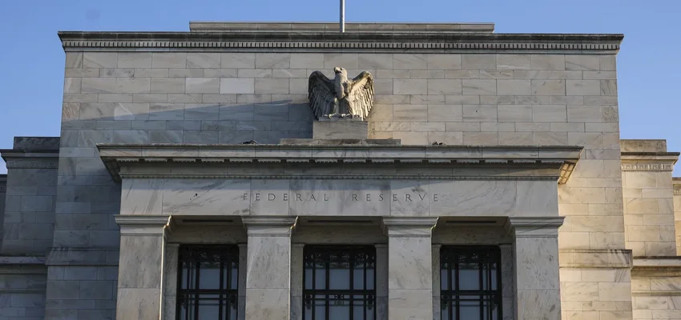

The Fed’s higher-for-longer strategy on interest rates is slowly crumbling. Welcome to higher-for-long-enough.
Investors are feeling bullish that the Federal Reserve will begin to cut interest rates in the first half of next year, despite Fed Chair Jerome Powell and other officials saying they’re not considering rate cuts just yet. Still, some think rate cuts could come as early as the first quarter.
The latest inflation figures have been encouraging, and real-time forecasts show that economic growth has slowed dramatically since the summer as the year comes to a close — a clear downshift from the red-hot pace of growth in the third quarter.
There is growing confidence that rate cuts are only a few months away, with a roughly 44% chance of that first cut coming in March, according to futures.
The Fed has kept rates steady for periods of time before beginning to cut. At one point, the Fed held its benchmark lending rate steady for more than a year starting in the summer of 2006.
But if the predictions of a March cut bear out, or even a rate cut in May, so much for the Fed’s higher-for-longer strategy.
“Now we’re moving into higher-for-long-enough,” Diane Swonk, chief economist at KPMG, told CNN in an interview.
Whenever the Fed begins to pare back its key interest rate, the pace will likely be gradual in the beginning, and it’s clear there won’t be a return to ultralow interest rates.
The Fed’s two-day policy meeting this week concludes on Wednesday, and the central bank is widely expected to hold rates steady at a 22-year high for the third consecutive meeting. Central bank officials will also release their latest set of economic projections, which will likely reflect inflation cooling faster than previously estimated.
“I am increasingly confident that policy is currently well positioned to slow the economy and get inflation back to 2%,” Waller said. “I am encouraged by what we have learned in the past few weeks — something appears to be giving, and it’s the pace of the economy.”